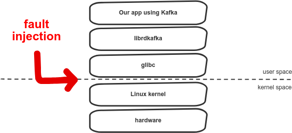

1. Intro
A short story of when checking one small property leads you deep down into the rabbit hole. The goal was to check high-level fault-tolerance property while sending messages to Kafka and I ended up changing the CPU register to get the exact failure I wanted and exactly when I wanted.
For those familiar with the topic of syscall interception it could still be entertaining, as it presents a new tool for the job.
2. Kafka producer idempotence
All of this started, when I wanted to setup Kafka client with a new feature introduced in librdkafka 1.0: idempotent producer. Here is a definition of this feature, as described in Confluent blog:
An idempotent operation is one which can be performed many times without causing a different effect than only being performed once. The producer send operation is now idempotent. In the event of an error that causes a producer retry, the same message — which is still sent by the producer multiple times — will only be written to the Kafka log on the broker once.
Setting up Kafka producer to use idempotence is pretty straightforward, just a config entry enable.idempotence=true needs to be provided. Those of us, who doubt that it works properly (“is it really all that needs to be set?” “did I include a correct dependency version?”), would probably want some additional verification.
Under normal operation, turning this feature on does not change much. The only observable effect is some additional bits in the serialized message:
How does this feature work? Under the covers it works in a way similar to TCP; each batch of messages sent to Kafka will contain a sequence number which the broker will use to dedupe any duplicate send.
At this point, we could just sniff at network traffic and check that those sequence numbers are actually set. Based on that it could be deduced that producer idempotence works. Still, the dedupe mechanism has not been observed. Ideally, we would have a test with two scenarios: with and without idempotence enabled, where we could observe duplicated messages in one scenario and no duplicates in the other.
How can we check deduplication (ideally without changing our application’s code)?
Here are the options I have found so far:
- Killing TCP connections (or the broker itself) - a large number of messages is sent. During sending, TCP connections are killed (eg using
tcpkill) or the broker itself is killed. See blog post. - Socket network emulation - either by using callbacks (requires modifying our app code) or by preloading a library for wrapping network calls, as can be done in tests for librdkafka.
- Hatrace - modifying those system calls, which we want to fail.
I chose Hatrace to verify Kafka producer idempotence.
3. What is Hatrace?
Short answer:
scriptable
strace
At least that is, what its GitHub page says. For those of you, who wonder what is strace, it’s a Linux utility tool for tracing system calls. Going futher, a system call (in short syscall) is a way for your application to use the interface of the Linux kernel to perform actions such as: reading a file from hard disk, creating network sockets, sending data through sockets, process creation and management, memory management, in short any IO operation your application uses.
Hatrace is an open-source project written in Haskell and led by Niklas with help of Kirill. They were very helpful when introducing me into the project at ZuriHac. Contributing to Hatrace is also far easier than I initially expected and there is still plenty of work left to be done, as the project is still in its infancy. You can contact me if you need help with starting out.
Hatrace includes:
- an executable to trace syscalls (similarly to
strace) - a library for processing syscalls in a programmatic way
So, any IO operation made by your application can be traced and optionally modified using Hatrace library. You don’t even need to have the source code:

By changing syscalls we can inject a failure “from below”. From the application perspective there won’t be any difference between real and injected system call failure. There is no need to change the code and it could be used for any application, any language or virtual machine.
It should be noted that strace also enables modification of syscalls using -e inject, but its abilities are limited by its executable syntax. For example, we can change the result of syscalls, but there is no programmatic way to control which syscalls should be changed.
The advantage of Hatrace over the other approaches described above is that it enables precise introduction of failure into syscalls. There are other ways to achieve this precision in overriding syscall results: 1, 2, 3. Those mainly involve using the LD_PRELOAD trick and wrapping glibc calls. This approach has its own limitations. For example, Go uses syscalls directly on Linux, without depending on glibc. The other drawback is a necessity to use a lower-level language, and even though all programmers must learn c, I still prefer to write my test cases in a higher level language.
4. Hatrace in practice
4.1 Running test cases
This is the code used to execute test cases in two scenarios:
spec :: Spec
spec = around_ withKafka $ do
describe "kafka producer without idempotence" $ do
it "sends duplicate messages on timeouts" $ do
let enableIdempotence = False
msgs <- runProducerTestCase enableIdempotence
msgs `shouldSatisfy` (\case
Right messages -> length messages == 7
Left _ -> False
)
describe "kafka producer with idempotence enabled" $ do
it "sends duplicates, but they are discarded on the broker" $ do
let enableIdempotence = True
msgs <- runProducerTestCase enableIdempotence
msgs `shouldSatisfy` (\case
Right messages -> length messages == 5
Left _ -> False
)Those tests use Kafka and ZooKeeper, which are deployed to Docker in withKafka. Here is the actual execution of each test case (some hacks will follow):
runProducerTestCase :: Bool -> IO (Either KafkaError [Maybe B.ByteString])
runProducerTestCase enableIdempotence = do
execPath <- takeDirectory <$> getExecutablePath
let cmd = execPath </> "../idempotent-producer-exe/idempotent-producer-exe"
argv <- procToArgv cmd [brokerAddress, kafkaTopic, show messageCount, show enableIdempotence]
counter <- newIORef (0 :: Int)
void $ flip runReaderT counter $
sourceTraceForkExecvFullPathWithSink argv $
syscallExitDetailsOnlyConduit .|
changeSendmsgSyscallResult .|
CL.sinkNull
msgs <- consumeMessages
printMessages msgs
pure msgsSo, what happens in here is that in lines:
let cmd = execPath </> "../idempotent-producer-exe/idempotent-producer-exe"
argv <- procToArgv cmd [brokerAddress, kafkaTopic, show messageCount, show enableIdempotence]A command to be executed is build. Firstly, a path to executable is constructed relative to current test location - this is a hack to run main program directly from tests. And why do we need to start a separate process? Internally, Hatrace uses similar mechanism as strace, which is a ptrace(2) system call as described in its man page:
The
ptrace()system call provides a means by which one process (the “tracer”) may observe and control the execution of another process (the “tracee”), and examine and change the tracee’s memory and registers. It is primarily used to implement breakpoint debugging and system call tracing.
4.2 Changing syscall result
Next, we provide the parameters for our Kafka producer and then we run it in:
void $ flip runReaderT counter $
sourceTraceForkExecvFullPathWithSink argv $
syscallExitDetailsOnlyConduit .|
changeSendmsgSyscallResult .|
CL.sinkNullThis part above runs the executable and traces syscall events. With a Conduit pipeline we filter only exit-from-syscall events, as ptrace notifies us on syscall enter and exit. The “meat” of bug injection happens in changeSendmsgSyscallResult:
changeSendmsgSyscallResult :: (MonadIO m, MonadReader (IORef Int) m)
=> ConduitT SyscallEvent SyscallEvent m ()
changeSendmsgSyscallResult = awaitForever $ \(pid, exitOrErrno) -> do
yield (pid, exitOrErrno)
case exitOrErrno of
Left{} -> pure () -- ignore erroneous syscalls
Right exit -> case exit of
DetailedSyscallExit_sendmsg SyscallExitDetails_sendmsg
{ bytesSent } -> do
when (("msg2" `B.isInfixOf` bytesSent)) $ do
counterRef <- ask
counter <- liftIO $ readIORef counterRef
when (counter < 2) $ liftIO $ do
let timedOutErrno = foreignErrnoToERRNO eTIMEDOUT
setExitedSyscallResult pid (Left timedOutErrno)
modifyIORef' counterRef (+1)
_ -> pure ()The above code processes SyscallEvents and when sendmsg(2) syscall is encountered, then the bytes sent are investigated. Certain type of messages, those which contain “msg2”, will be failed with a timeout error, but only a limited number of them.
To determine the actual value that needs to be set, let’s first have a look at the setExitedSyscallResult function:
setExitedSyscallResult :: CPid -> Either ERRNO Word64 -> IO ()
setExitedSyscallResult cpid errorOrRetValue = do
let newRetValue =
case errorOrRetValue of
Right num -> num
Left (ERRNO errno) -> fromIntegral (-errno)
regs <- annotatePtrace "setExitedSyscallResult: ptrace_getregs" $ ptrace_getregs cpid
let newRegs =
case regs of
X86 r -> X86 r { eax = fromIntegral newRetValue }
X86_64 r -> X86_64 r { rax = newRetValue }
annotatePtrace "setExitedSyscallResult: ptrace_setregs" $ ptrace_setregs cpid newRegsWhen we set the syscall result to some errno value, then we take a negative of it and set in rax register in case of 64-bit architecture. To understand what is going on here, it’s good to see how syscalls are executed from assembly.
4.3 System call in detail
Firstly, an application needs to set general purpose registers. On x86_64 this will be: syscall number in rax register, syscall arguments in rdi, rsi, rdx, r10, r8, r9 registers. After that, a syscall machine instruction is executed to pass control to the kernel. Upon completion, the rax register is filled with a return value. Here is an example taken from some StackOverflow answer:
.global _start
.text
_start:
# write(1, message, 13)
mov $1, %rax # system call 1 is write
mov $1, %rdi # file handle 1 is stdout
mov $message, %rsi # address of string to output
mov $13, %rdx # number of bytes
syscall
# exit(0)
mov $60, %rax # system call 60 is exit
xor %rdi, %rdi # return code 0
syscall
message:
.ascii "Hello, World\n"Fortunately, all of this “register” work is usually done by syscall wrappers provided by a C standard library (in short: libc, most commonly it is GNU C Library: glibc), so we can simply call a C API function instead of assembly. There is one caveat, though, as described in man for syscalls (man 2 intro):
On error, most system calls return a negative error number (..). The C library wrapper hides this detail from the caller: when a system call returns a negative value, the wrapper copies the absolute value into the
errnovariable, and returns -1 as the return value of the wrapper.
This description is in fact, inaccurate, as not all negative return values are treated as an error. Some could be also valid, succesful results. For more details see: Linux System Calls, Error Numbers, and In-Band Signaling. In short, this is what happens to translate negative return value to errno in libc library:
In other words, in Hatrace we perform the syscall modification before libc translates error to errno, so we could also set the error value like that:
4.4 Choosing the errno value
Where does the 110 value come from? I got it from errno.h (in my case it was in /usr/include/asm-generic/errno.h):
...
#define ESHUTDOWN 108 /* Cannot send after transport endpoint shutdown */
#define ETOOMANYREFS 109 /* Too many references: cannot splice */
#define ETIMEDOUT 110 /* Connection timed out */
#define ECONNREFUSED 111 /* Connection refused */
#define EHOSTDOWN 112 /* Host is down */
#define EHOSTUNREACH 113 /* No route to host */
...
When the above error value is used, running the test scenarios will produce following output:
$ stack build --test
idempotent-producer-0.1.0.0: test (suite: idempotent-producer-test)
IdempotentProducer
kafka producer without idempotence
zookeeper started
kafka broker started
%3|1567199588.190|FAIL|rdkafka#producer-1| [thrd:127.0.0.1:9092/1]: 127.0.0.1:9092/1: Send failed: Connection timed out (after 179ms in state UP)
%3|1567199588.190|ERROR|rdkafka#producer-1| [thrd:127.0.0.1:9092/1]: 127.0.0.1:9092/1: Send failed: Connection timed out (after 179ms in state UP)
%3|1567199588.291|FAIL|rdkafka#producer-1| [thrd:127.0.0.1:9092/1]: 127.0.0.1:9092/1: Send failed: Connection timed out (after 87ms in state UP)
%3|1567199588.291|ERROR|rdkafka#producer-1| [thrd:127.0.0.1:9092/1]: 127.0.0.1:9092/1: Send failed: Connection timed out (after 87ms in state UP)
messages were sent to broker
consumed messages: ["msg1","msg2","msg2","msg2","msg3","msg4","msg5"]
kafka broker stopped
zookeeper stopped
sends duplicate messages on timeouts
kafka producer with idempotence enabled
zookeeper started
kafka broker started
%3|1567199633.280|FAIL|rdkafka#producer-1| [thrd:127.0.0.1:9092/1]: 127.0.0.1:9092/1: Send failed: Connection timed out (after 80ms in state UP)
%3|1567199633.281|ERROR|rdkafka#producer-1| [thrd:127.0.0.1:9092/1]: 127.0.0.1:9092/1: Send failed: Connection timed out (after 80ms in state UP)
%3|1567199633.385|FAIL|rdkafka#producer-1| [thrd:127.0.0.1:9092/1]: 127.0.0.1:9092/1: Send failed: Connection timed out (after 99ms in state UP)
%3|1567199633.386|ERROR|rdkafka#producer-1| [thrd:127.0.0.1:9092/1]: 127.0.0.1:9092/1: Send failed: Connection timed out (after 99ms in state UP)
messages were sent to broker
consumed messages: ["msg1","msg2","msg3","msg4","msg5"]
kafka broker stopped
zookeeper stopped
sends duplicates, but they are discarded on the broker
Finished in 86.6692 seconds
2 examples, 0 failures
idempotent-producer-0.1.0.0: Test suite idempotent-producer-test passedThe ETIMEDOUT error was chosen as an example, from man 7 tcp page:
ETIMEDOUT The other end didn’t acknowledge retransmitted data after some time.
Could this situation also happen in real life? According to Unix Network Programming, Volume 1, Chapter 7 yes, when the SO_KEEPALIVE socket option is set:
| Scenario | Peer process crashes | Peer host crashes | Peer host is unreachable |
|---|---|---|---|
| Our TCP is actively sending data | Peer TCP sends a FIN, which we can detect immediately using select for readability. If TCP sends another segment, peer TCP responds with an RST. If the application attempts to write to the socket after TCP has received an RST, our socket implementation sends us SIGPIPE. | Our TCP will time out and our socket’s pending error will be set to ETIMEDOUT | Our TCP will time out and our socket’s pending error will be set to EHOSTUNREACH. |
SO_KEEPALIVE is configurable in librdkafka config with socket.keepalive.enable.
The error handling logic in librdkafka handles most of the errors similarly: tearing down the connection and reconnecting.
We could also try running the example with another error set. For example, using the already mentioned EHOSTUNREACH, which will produce following errors in the log:
%3|1567202450.663|ERROR|rdkafka#producer-1| [thrd:127.0.0.1:9092/1]: 127.0.0.1:9092/1: Send failed: No route to host (after 89ms in state UP)There is also a possibility to change the response that is received from the broker. We would then need to hook on recvmsg(2) in Hatrace and change the bytes received, e.g. to a more typical error response: LEADER_NOT_AVAILABLE as defined in Kafka protocol specification.
The code for the above is available at: https://github.com/tgrez/kafka-producer-idempotence.
5. Summary
This was a simple example of using Hatrace library to test the behavior of our application under failure scenario, which is hard to reproduce otherwise. It is applicable for all applications using system calls, so the application itself can be written in any language, while our tests would need to be written in Haskell.
The main drawback of this approach is its performance. Attaching to another process with ptrace and reading its memory makes calling syscalls much slower, even though the overhead of Haskell’s FFI is quite low.
For more possible use cases of Hatrace have a look at: https://github.com/nh2/hatrace#use-cases
Special thanks to Krzysztof Siejkowski, Przemysław Szałaj and Wojciech Wiśniewski for proofreading.